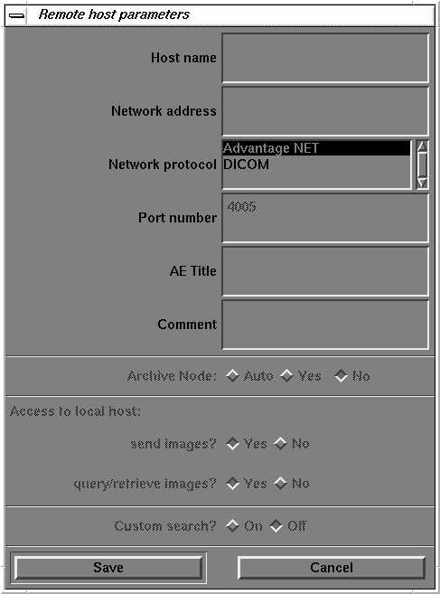
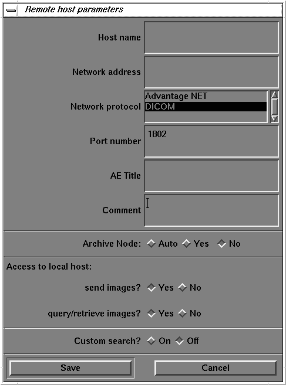

Operating Documentation
Direction 5134894-800, Rev# 9
GOC4 Upgrade Installation & Service Information
Operating Documentation |
| Required Persons | Preliminary Reqs | Procedure | Finalization |
|---|---|---|---|
| 1 |
This module contains the following procedures:
Enter Remote Host Configuration Screen - Enter Remote Host Configuration Screen
Declaring Advantage NET Remote Hosts on the LightSpeed - Declaring Advantage NET Remote Hosts on the LightSpeed
Declaring DICOM Remote Hosts on the LightSpeed - Declaring DICOM Remote Hosts on the LightSpeed
| Last Revised: | 03 November, 2003 |
On the OC, select the [Image Works] icon.
Select [Network] .
Use Advantage NET Protocol networks to communicate with older CT or MR Systems (MR Signa 4.x, CT-HLA, CT/I Systems, and Workstations that support the Advantage NET protocol).
Advantage NET Protocol does not offer full compatibility with LightSpeed DICOM formats.
Repeat the following procedure for each Advantage NET Remote Host device that the customer expects to have this CT system communicating with.
Select [Remote Hosts] from the pull down menu. The system displays the Remote Host Parameter Screen as shown in Illustration 1.
Illustration 1: Advantage Net Network Protocol Parameter Settings

Enter the hospital provided Host name.
Enter the hospital provided Network Address (IP Address).
Select [Advantage NET] as the Network Protocol.
The systems automatically “grays-out” (i.e., makes non-selectable) the remaining parameter fields on the Remote Host parameter selection screen. These are dedicated DICOM protocol parameters and do not apply to Advantage NET type devices.
Select [Save] to store the parameter settings of the remote host.
Procedure Overview:
Use DICOM protocol networks to communicate to DICOM devices such as CT/i, CT Synergy, DLX, MR Lx, and third party hosts.
Repeat the following procedure for each DICOM remote host device that the customer expects to have this CT system communicating with.
Select [Remote Hosts] from the pull down menu. The system displays the Remote Host Parameter screen as shown in Illustration 2.
Illustration 2: DICOM Network Setting Protocol Parameter Settings

Enter the hospital provided Host name.
Enter the hospital provided Network Address (IP Address).
Select [DICOM] as the Network Protocol.
The system automatically highlights the remaining parameter fields on the Remote Host parameter selection screen. These are dedicated DICOM Protocol parameters.
Enter the TCP/IP Listening Port Number from the DICOM Conformance Statement provided with the device.
Enter the AE Title from the DICOM Conformance Statement provided with the device.
Application Entity Titles (also known as ACR-Nema or Dicom Name) refer to the DICOM Network Services that a device provides to the CT System. For most devices, the AE Title is the same as the hostname (LightSpeed systems are equipped with this feature).
However, some devices such as PACS systems may have separate AE Titles and port numbers for each of the services that the PACS system provides. In these cases, you must enter a separate remote host (same hostname and IP Address) for each of the independent AE Title Services that the host provides (one host as an image push-to destination, another host as a query/retrieve provider, and another host as a storage/commitment provider).
Be sure to review the DICOM Conformance Statement for each device that will provide a remote host network service for the CT system (image push-to or store destination, Query/Retrieve, and Storage Commitment) to ensure that each service is correctly configured.
Select the correct Archive Node choice for the device.
The Archive Node selection field defines the ability of the remote host to act as a DICOM Storage/Commitment provider and indicate to the operator that a study/series/image was archived.
Select:
[Auto] to have the CT system automatically check to see if the designated remote host is a DICOM Storage/Commitment Provider.
[Yes] if the device is the hospital designated DICOM Storage/Commitment Provider. During an Application Study Archive process, the local browser screen will indicate Archive Status = Y to the operator.
[No] if the device is not a DICOM Storage/Commitment Provider.
Select the correct Access to local host: settings.
These two selections allow you to selectively block the remote host from using the LightSpeed DICOM services as a provider (image push-to destination, and a Query/Retrieve provider).
Send Images?
Set to [Yes] if the customer wants the CT system to be able to have images pushed to the system from the applicable remote host.
Set to [No] if the customer wants to block an image push from the applicable remote host.
Query/retrieve images?
Set to [Yes] if the customer wants the remote host to be able to review the CT image database (query) and pull selected images from the database.
Set to [No] if the customer does not want the remote host to have this ability.
Select the correct Custom search? setting.
This selection allows the CT scanner to selectively search through the remote host's image database when the operator is using remote browser screen to query the remote host. The search parameters that the LightSpeed system allows the customer to use are: last name contains, patient ID, exam number, accession number, and exam date.
Select [ON] if the device supports custom searches as part of the devices Query/Retrieve DICOM Provider service.
Select [OFF] if the device does not support custom searches.
Record all the LightSpeed remote host network parameters for each remote host in the Software Installation Procedures manual.
Select [Save] to store the parameter settings of the remote host.
No finalization required.